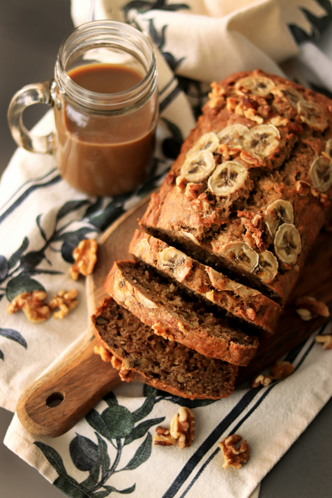

Banana Bread
Soft, moist banana bread that's perfect for breakfast or a snack.
Ingredients:
- 2 to 3 ripe bananas, mashed
- 1/2 cup butter, melted
- 1 cup sugar
- 2 eggs
- 1/4 cup milk
- 2 cups all-purpose flour
- 1 teaspoon baking soda
- 1/4 teaspoon salt
Instructions:
- Preheat the oven to 350°F (175°C).
- In a large bowl, combine mashed bananas, melted butter, and sugar.
- Stir in the eggs and milk until well combined.
- In a separate bowl, whisk together flour, baking soda, and salt.
- Gradually add the dry ingredients to the wet mixture, mixing until just combined.
- Pour the batter into a greased loaf pan and bake for 60-65 minutes.
- Let cool before slicing and serving. Back to Snacks Recipes